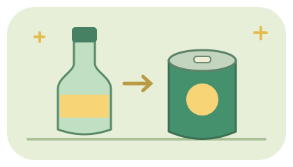
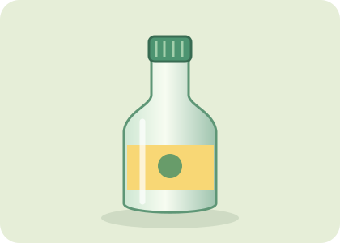

Trợ lý AI đoán nhầm ở đâu?
Giúp Sóc kiểm tra trợ lý phân loại chai và lon nhé!

- 1. Tìm lỗi
- 2. Thử sửa
- 3. So sánh
- 4. Ghi lại
Mô phỏng T1–T6: 4/6 đúng trước, 5/6 sau cải tiến ảnh; T5 vẫn sai. Dữ liệu từng dòng là minh hoạ, chưa đối chiếu bảng gốc. Gợi ý và kết quả có sẵn · Không có AI thật đang học hoặc chạy.

Góc phân loại của lớp cần em!
Trợ lý có thể gợi ý nhầm. Em sẽ nhìn cùng 6 ảnh, tìm lỗi rồi thử một thay đổi.
Xem phiếu ý tưởng Bài 3 của em
Phiếu là ý tưởng tham khảo của em. Thử nghiệm này luôn dùng trợ lý mẫu phân loại chai/lon và bộ 6 ảnh bên dưới.
Em có thể bắt đầu ngay bằng trợ lý mẫu; không cần làm Bài 3 trước.

Nhìn ảnh: AI gợi ý đúng hay sai?
Chi tiết nào giúp em phát hiện lỗi?
Trước khi sửa, AI đúng 4 / 6 ảnh.
Em sẽ thay đổi điều gì để giúp AI phân biệt hình dạng tốt hơn?
Em được thử cả thay đổi chưa phù hợp để xem kết quả. Các kết quả ở đây đã được viết sẵn cho bài mô phỏng.
Thay đổi có giúp AI tốt hơn không?
Xem lại kết quả của cùng 6 ảnh
Không nhập thông tin cá nhân. Báo cáo chưa được gửi đi; em có thể sao chép để dùng theo hướng dẫn của giáo viên.